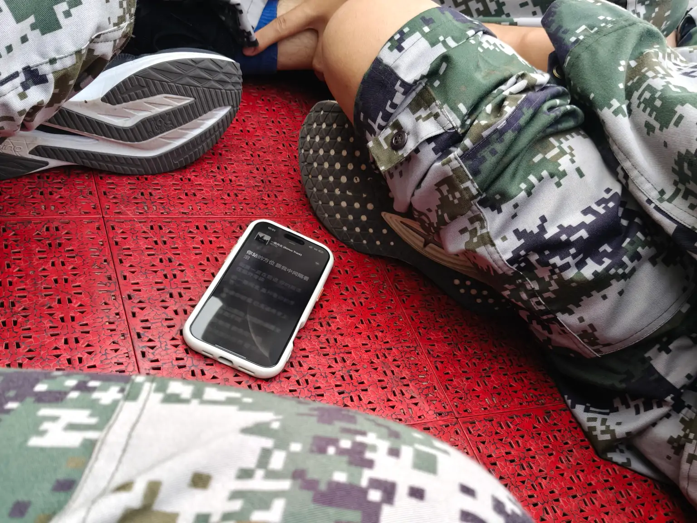

|2025-09-17|
其实写这篇文章的准确时间是在 2025-09-18 的 02：52，这个时候我们的八人寝里除我以外已经全部睡着。我在疲劳的心流状态里胡乱写点东西。刚刚结束的跨一整夜的拉练让大家累的够呛，但是我却越走越精神。进而试图熬一个通宵并奢侈地把时间花在对自己的精神建设上。因为键盘打字声音太明显，所以我就在手机上使用 Simple Text Editor 敲玻璃，再将文字转移到静态网页里。
Simple Text Editor 是很好用的开源软件，大家有极简敲字需求可以试一试它。
拼多多主页给我每天推荐的钢笔和实体游戏已经找不见了，取而代之的是抽纸、晾衣架、吸顶灯和内衣裤。每天精打细算着几块钱的外卖券，每天在公共晾衣杆上像星露谷的老农民收获土豆那样开心地获得干爽的衣服；每天踢着离地 25 公分的正步，每天看着身边的人点上红塔山，在去台球馆的路上和新认识的学姐调情，约好开房是在哪一天。
军训结束，要记住令行禁止，孩子们。我们也许像军队一样。但是我们可以在坐着休息的时候，拿出 Apple Music 里的歌，听着听着，沉浸在过去的日子里。逃离诸如今天不洗衣服明天就没得穿的的疲劳现实。
